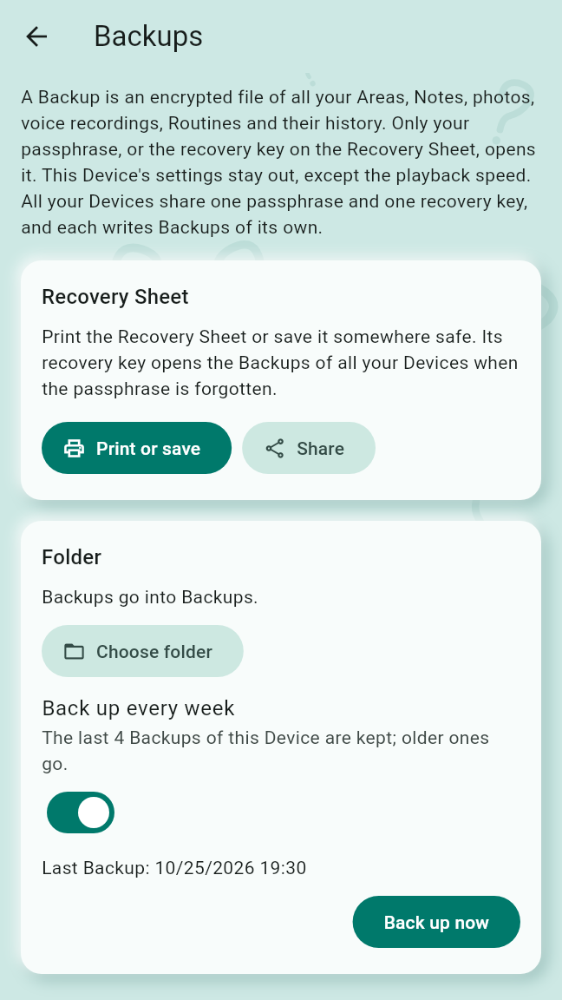
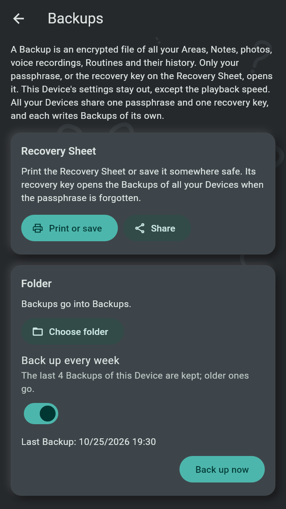
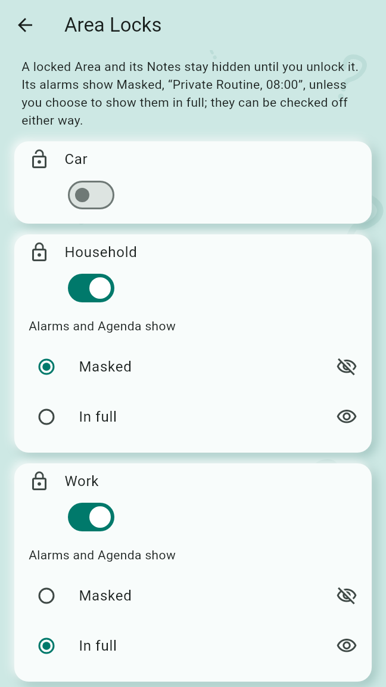
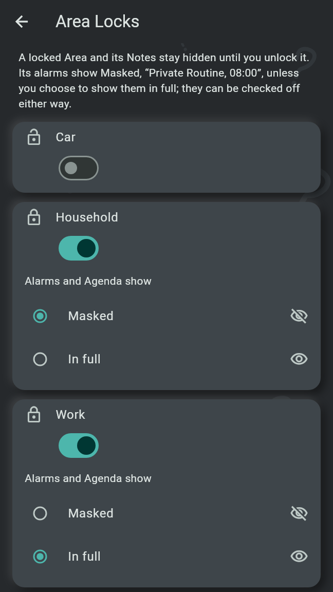

Backups are encrypted files of everything on a Device, opened with your passphrase or with the recovery key on the Recovery Sheet. The App Lock and the Area Locks keep others from browsing your Notes on the phone, and a block keeps a person's writing off your Devices.
On the Profile page, under Backups and recovery, Back up this Device opens Backups. "A Backup is an encrypted file of all your Areas, Notes, photos, voice recordings, Routines and their history. Only your passphrase, or the recovery key on the Recovery Sheet, opens it. This Device's settings stay out, except the playback speed. All your Devices share one passphrase and one recovery key, and each writes Backups of its own."
Type a passphrase into Passphrase and again into Passphrase again: at least 8 characters, and a short sentence is easy to remember. Set up Backups takes a few seconds. Set up on another of your Devices already, they need no setting up here: sync with that Device, and this one takes the same passphrase and recovery key.
The Recovery Sheet is a PDF page with your recovery key, as text and as a QR code. The recovery key opens the Backups of all your Devices, also when the passphrase is forgotten, so whoever holds it can read them: keep the sheet somewhere safe, in a drawer or a password manager, never next to the Backups. Print or save opens the print dialog, Share hands the PDF to the app you pick. The Backups page offers both at any time, not only after setting up. The sheet also says how to restore.
"Backups go into a folder you choose: on this Device, on a USB stick or in a cloud app." Choose folder picks it and writes the first Backup into it at once. Then:
Each Backup is a file named after the time it was written, ending in .obfbackup.


On an Android phone, Backups also offer Also keep the newest Backup in my Google account, off by default. "Android's own backup then keeps the newest Backup file, encrypted as it is, in your Google account, and nothing else of the app. On a new phone it comes back with your apps, and the app asks for the passphrase or the recovery key." With it on, the weekly Backup needs no folder. Google takes at most 25 MB: a larger Backup is not kept there, and the page says so; a folder still takes it.
A Backup is restored on the first start of a Device that holds no Notes yet, with Restore from a Backup (see Getting started): choose the Backup file, then type the passphrase, or type or scan the recovery key from the Recovery Sheet. Settings such as alarms, Quiet Hours and locks are not in a Backup; set them again afterwards, choose the Backup folder again and pair your other Devices again.
Settings, under Privacy: App Lock "asks for the PIN before showing your Notes. Capture and alarms never need it." While the app is locked, it shows "Old Brain Fix is locked" with the PIN field and Unlock; its "+" fans out the ways to capture as on the Agenda, without unlocking.
Behind the App Lock, a Sent Item opened from another app, a Profile card link and a tap on the Changes Nudge wait until the app is unlocked.
Under the App Lock, Area Locks lists every Area with its switch. "A locked Area and its Notes stay hidden until you unlock it." In the Areas list, a locked Area asks for the PIN or the fingerprint when it is opened; it stays open until the app locks again or you are back on the Agenda. Unlock {Area} for good asks the same before a lock goes off.
While an Area is locked, "Alarms and Agenda show" chooses:
A Routine of a Masked Area written into your calendar shows there as "Private Routine". A Note of a locked Area is never handed to another app while the Area is closed.


The locks and the PIN are settings of the phone they were set on: they are not synced and not in a Backup.
On another person's Profile, Block sits on the bar; a Sent Item's or a shared Area's preview offers Decline and block. "Everything {name} wrote is deleted from your Devices, except their check-offs, and nothing more of theirs is kept. A shared folder can still hold their encrypted files, which the app never opens; leaving the folder removes them."
Everything you capture stays on your own Devices: on the Device you captured it on, on the Devices you paired with it, and, for a Note in a Shared Area, on the Devices of that Area's people. Settings stay on each Device. There is no server and no account. The privacy policy lists what the app stores, when it goes online and what each permission is used for.